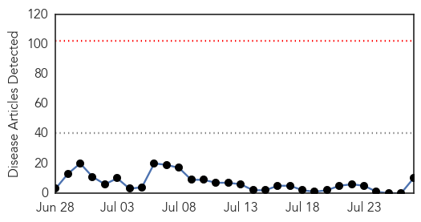
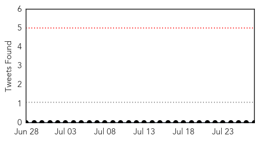
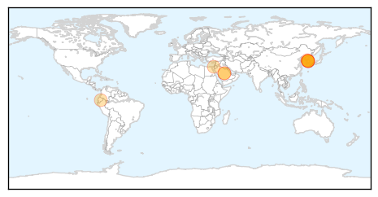
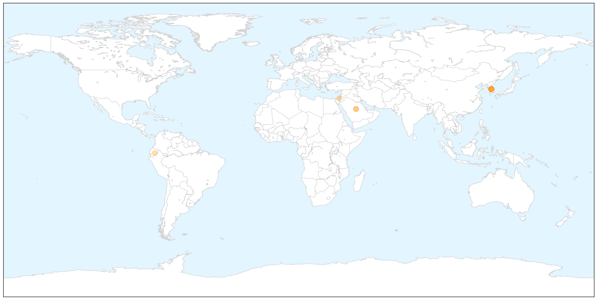
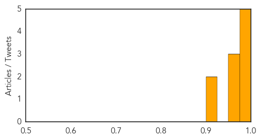
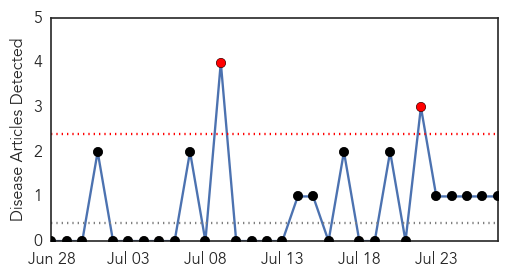

MERS
30-Day Web Trend
0 alerts, 0 warnings

30-Day Twitter Trend
0 alerts, 0 warnings

Article Locations

X

Article Confidences
Top Articles:
- 1.000
- Mers: What are the symptoms, how does the virus spread – and how contagious is it?
- 0.998
- Two possible MERS cases force hospital in Manchester to close
- 0.998
- Mers virus: What is Middle East Respiratory Syndrome?
- 0.998
- Manchester Royal Infirmary A&E unit closed over Middle Eastern Respiratory Syndrome (MERS-CoV) outbreak
- 0.982
- SOUTH KOREA South Korea removes last person from quarantine over MERS
- 0.971
- MERS Isn't an Epidemic. That Makes It Harder to Find a Cure
- 0.971
- South Korea releases last suspected MERS patient
- 0.964
- News Scan for Jul 27, 2015
- 0.904
- South Korea counts the cost of MERS outbreak
- 0.903
- A cure for Mers? Hong Kong scientists endorse two drugs they say cured marmosets of the virus
Top Tweets:
-
No tweets found for Jul 27, 2015
Mold/Fungal
30-Day Web Trend
2 alerts, 0 warnings

30-Day Twitter Trend
0 alerts, 0 warnings

Article Locations


Article Confidences

Top Articles:
Top Tweets:
-
No tweets found for Jul 27, 2015